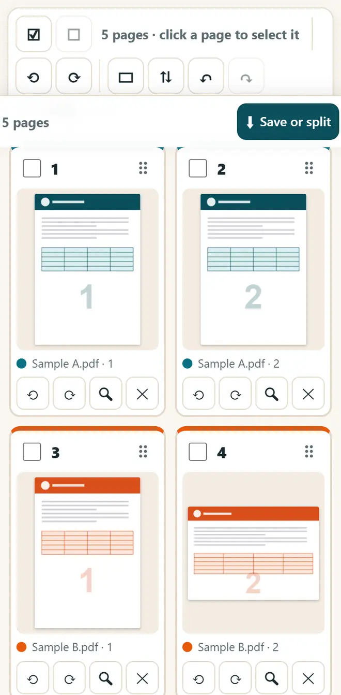
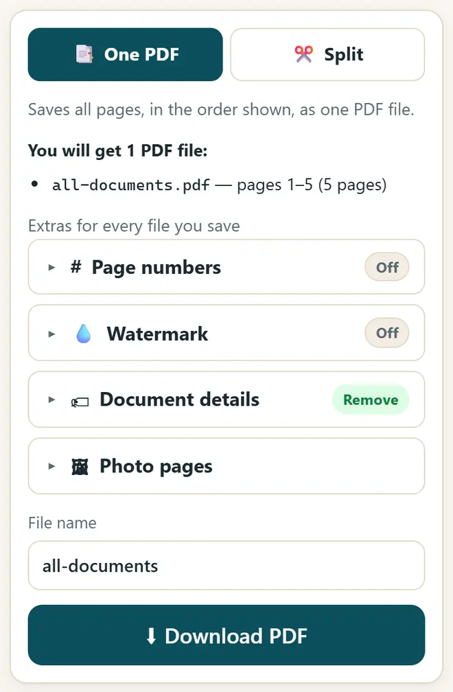

How to merge PDF files without uploading them
Most PDF websites upload your Aadhaar, marksheets and bank statements to their servers. This way joins the files inside your own browser, on a phone or a computer, so nothing leaves your device.
Short answer
Open PDF Merge, Split & Organise, press “Add files” and choose your PDFs or photos, drag the pages into the right order, and press “Download PDF” under “One PDF”. The files are joined in your browser, with no upload, no watermark and no sign-up.
Merge PDFs in 5 steps
-
Open the app
Open PDF Merge, Split & Organise in Chrome or any browser. The first time, it needs internet to load its PDF engine. After that it also works offline.
-
Add your files
Press “Add files” and choose two or more PDFs. You can mix in JPG or PNG photos too, for example a photo of a receipt. To try it first, press “Try with sample files”.
-
Put the pages in order
Every page appears as a card. Drag a card to move it, or select pages to rotate, duplicate or delete them. Made a mistake? Press Undo.

Every page as a card: drag to change the order. -
Add page numbers or a watermark (optional)
Under “Extras for every file you save”, you can add page numbers or a watermark. For a KYC copy of Aadhaar or PAN, write who it is for and the date, so nobody can reuse the copy.
-
Download the merged PDF
Under “One PDF”, type a file name and press “Download PDF”. The joined PDF is saved in your Downloads, ready to email or upload.

Type a file name and download the merged PDF.
More you can do with the same app
- Split a PDF: in “Split”, type page ranges like 1-3, 5, 8-10 and get one file for each range.
- Save every page as its own PDF, or split after every 2 pages for front-and-back scans.
- Join a photo of a bill, its GST invoice and the UPI payment screenshot into one PDF before you email it.
- Remove hidden details such as the author and the software name from the file before you share it.
Get new free tools and Hindi AI lessons
Join our email list to hear about new free apps, new guides and Hindi video lessons on AI. No spam.
For adults (18+). You can unsubscribe at any time.
Why we recommend these tools
- Free for everyone: no ads, no sign-up and no paid plan.
- Private: your files and details stay on your own device.
- Works on a phone, laptop or smartboard, and offline once opened.
- Available in 12 languages, including Hindi.
Prefer video? Watch free Hindi lessons on AI and free tools on our YouTube channel.
Frequently asked questions
Is it safe to merge Aadhaar or bank PDFs here?
Yes. The files are read and joined inside your browser. Nothing is uploaded to any server, and nothing is kept after you close the page.
How do I merge PDFs on a mobile phone?
Open the app in Chrome on your phone, press “Add files”, pick the PDFs from Downloads or your file manager, and press “Download PDF”. Very big files work better on a computer.
Can I join photos and PDFs together?
Yes. JPG, PNG and WebP photos become PDF pages. You can choose whether each photo becomes an A4 page or keeps its own shape.
Is there a limit on files or pages?
There is no fixed limit. The only limit is your device's memory: a phone may struggle with hundreds of pages, so use a computer for very large files.
My PDF has a password. Can I merge it?
First open it with its password in the “Unlock PDF” tab of PDF Compress & JPG to PDF and save an unlocked copy, then add that copy here. Do this only for your own documents.
Found this useful?
Send it to a friend, your colleagues or your school's WhatsApp group.